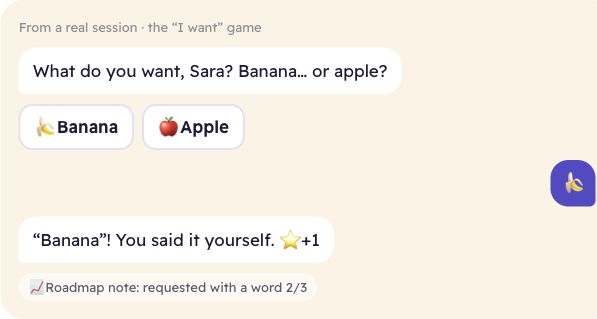

Daily play with Rafeeq
Rafeeq is a camel character that guides short games in Gulf Arabic. Medka describes adapting the games, voice, and length for children ages two to ten with autism, speech delay, or ADHD.
See Medka’s play exampleWhat an activity looks like
Check in
Rafeeq says hello and asks how the child feels. Picture choices give the child a way to answer without reading or typing.
Choose a short game
Rafeeq picks a game linked to a current milestone and gives one prompt at a time. The app uses the child’s interests and recent activity to guide its prompts.
Practise at the child’s pace
Rafeeq plays alongside the child and gives spoken encouragement. If the child wants to stop, they can pause and use the Calm Corner.
Finish and share a recap
Effort earns stars. The caregiver can read a summary of the child’s mood, what worked, and what was difficult.


Medka illustrates how a picture choice can help a child practise asking and how a brief observation can appear on the roadmap.
What the games practise
- Communication
- In I Want, the child can use a picture, sound, gesture, or word when asking for something. Other prompts support naming and sound imitation.
- Gaze and attention
- Look at Me uses short prompts to practise noticing when someone calls. Medka describes optional live camera cues during activities.
- Emotions
- Faces introduces emotions and lets children respond to picture prompts about how they feel.
- Regulation
- The Calm Corner offers a quiet break, including a balloon activity. What helps the child settle can be included in their profile.
- Learning
- Colours and Numbers gives children short, repeatable activities connected to a learning goal.
- Routine at home and school
- The live app describes a predictable opening and closing. Home activities and classroom observations can inform the same roadmap.
How Medka adjusts the experience
The child sees the activity, picture choices, and stars. Adults can review notes and progress in their own views. Families can set preferences such as length, words to practise, rewards, and what helps the child settle.
The adult interface offers Arabic and English. The child-facing voice described by Medka uses Gulf Arabic.
Source Medka’s live feature guide